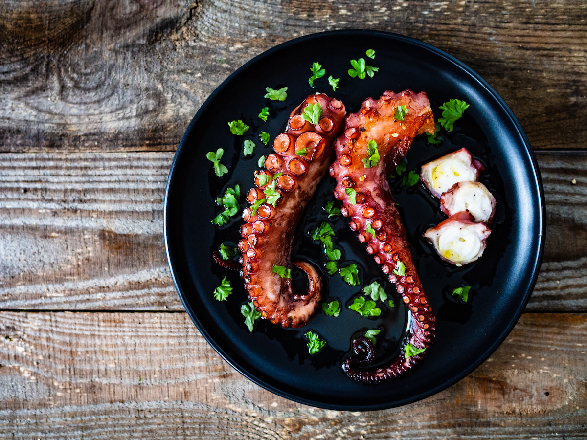

Grilled Octopus

Description
Grilled octopus consists of either whole octopus or octopus tentacles cooked over the direct heat of an outdoor charcoal or gas grill. Grilling fresh octopus is a simple way to make this ingredient shine. A braise in boiling water beforehand will tenderize the meat and make it ready to absorb any marinade. The char of the grill amps up its taste and its tender-yet-chewy texture, making octopus a versatile appetizer, side dish, or main.
Ingredients
- 2 bay leaves
- 3 rosemary sprigs
- 10 whole black peppercorns
- 1½ teaspoons salt, divided
- 5 garlic cloves, smashed
- 3 lemons, divided
- 1 3-pound octopus, cleaned, beak and eyes removed
- 3 tablespoons extra-virgin olive oil
- ¼ teaspoon freshly ground black pepper
- ¼ cup chopped parsley, tarragon, and dill, to garnish
- Flaky salt, to garnish
Steps
- Fill a large pot with water and add the bay leaves, rosemary, peppercorns, 1 teaspoon of the salt, the garlic cloves, and 1 lemon, halved.
- Bring the braising liquid to a boil.
- Add the octopus to the boiling water and lower the heat to a simmer, cooking until the octopus is tender, approximately 45 minutes. (Test the meat’s tenderness by piercing it with a sharp knife.)
- Using tongs, remove the octopus from the braising liquid and cut it into large pieces. Set the octopus aside to cool.
- In a medium bowl, combine the olive oil, black pepper, and the juice of 1 lemon.
- Add the cooled octopus to the marinade, cover, and refrigerate it for at least 2 hours or up to overnight.
- Start a charcoal or wood fire, or preheat your gas grill to high heat.
- Grill the octopus pieces until their exterior browns, but they’re still juicy inside, approximately 3–4 minutes per side.
- Remove the octopus pieces from the grill quickly, so they don’t overcook.
- Slice the remaining lemon into wedges and serve alongside the octopus.
- Garnish the grilled octopus with fresh herbs and flaky salt.